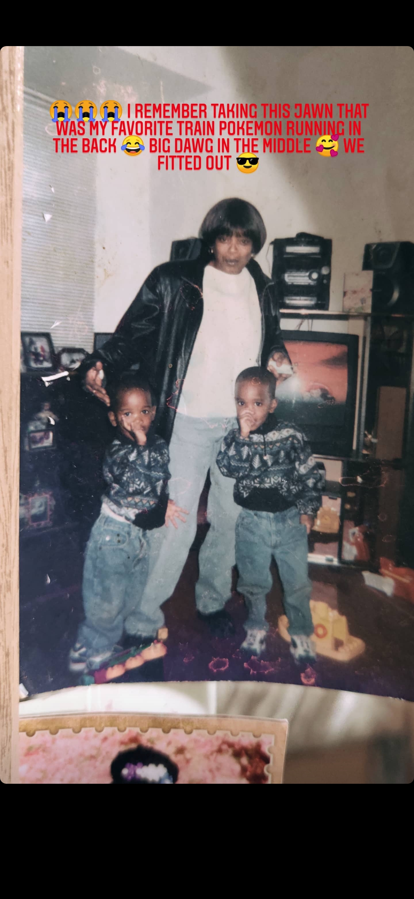
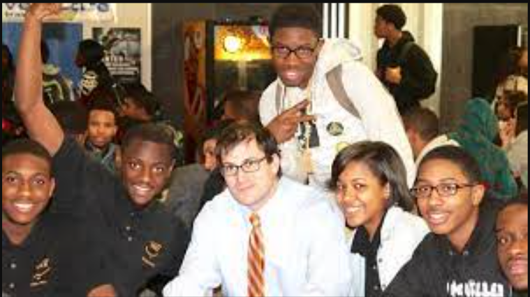
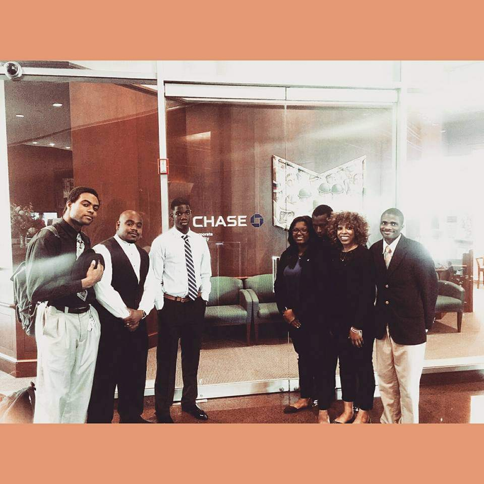
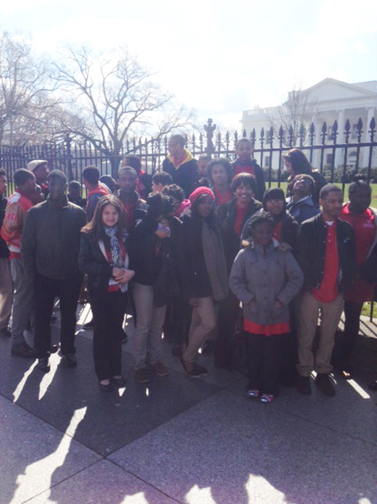

I was raised in South Philadelphia. I developed a love for technology at the age of 5. For me it all just felt so intuitive
I was not afforded the opportunity to be able to tinker as much as I wanted to. However, I never
allowed this to stop me in my tracks. I just found other means of doing such. I then fell for math and numbers.
Something about 2+2 always equaling 4 was simply magical.

© ®
Middle Ground
The Universe provided me with the privilegde to attend the High School of Engineering and Science.
It was here that I began my career in technology. I took all the available computer science and math classes.
I was also able to take up paid summer internships. I began to learn the importance of inventory management and repairs.

© ®
Transition Into Adulthood
After graduating high school, I worked as a dish washer where I learned all the important things about sanitation my mother
wanted to teach me but I couldn't quite grasp yet. I did that for about a year and felt unappreciated. I happened to stumble
across an opportunity to return to "school". The education was mediocre but the opportunity they promised was obtainable.
I interned at JP Morgan Chase where I was exposed to Risk Management. I had earned an academic sponsorship but someone lied on me terribly
the HR department felt they needed to rescind my offer. One again we kept the ball rolling, same direction.
I think the lady who got in my way was a loser but w.e

© ®
Visions and Aspirations
I successfully graduated from the program. It took time but I was able to break back into tech.
I worked as a professional technical support engineer for multiple fortune 500 companies.
I currently work as a CyberSecurity Technician for an ISP. My goal is to continue growing as Security Engineer.
I would love to be able to use to the knowledge of a software engineer to reinforce my focus as a Security Professional.
While these are 2 completely seperate career paths and one is not needed for the other; there's still a very thin line between them.
If you have either without the other; it's a recipe for animal scat. No Bueno.

© ®